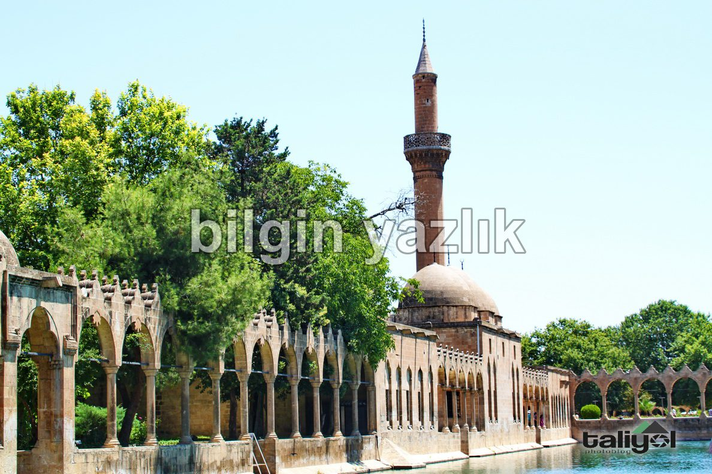
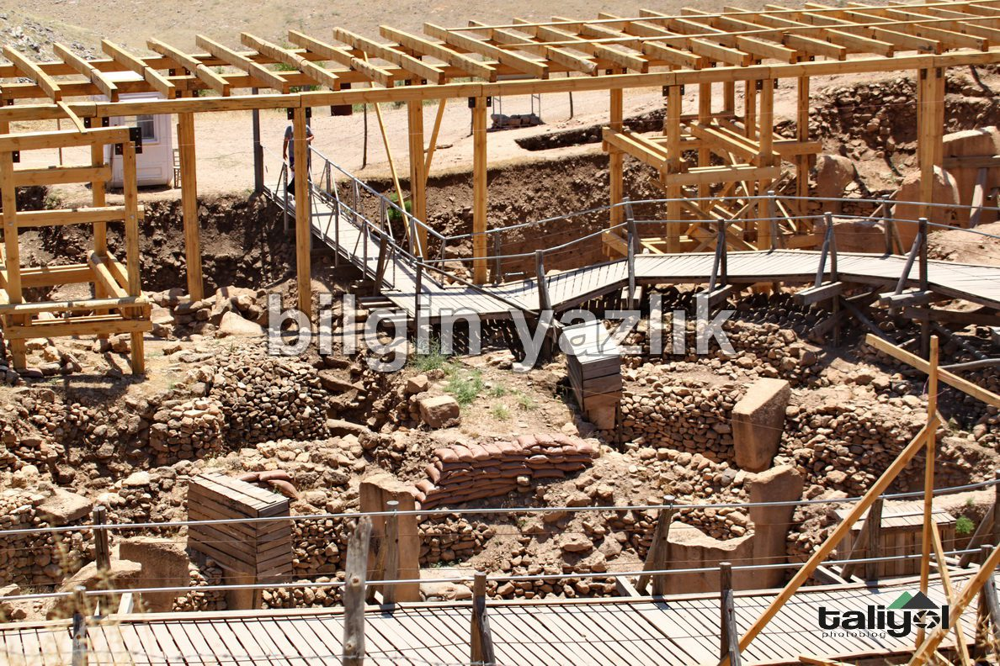
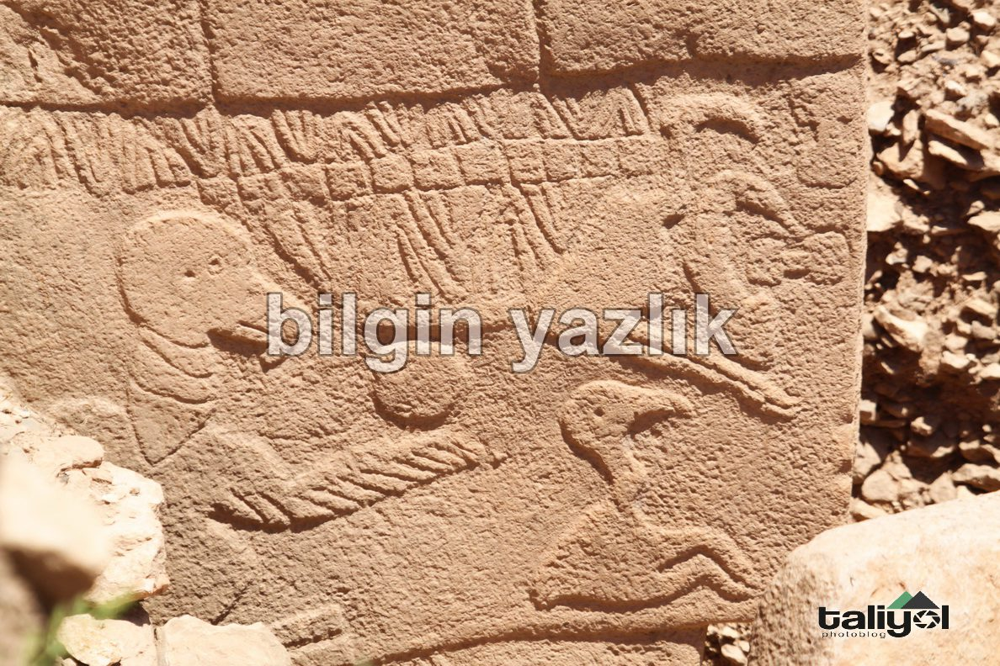

Urfa ve Göbekli Tepe
Urfa, balıklı gölü, peygamber tübeleri ile dolu, geçmişi binlerce yıl öteye dayanan bir medeniyet şehri.
Öyle bir medeniyet şehri ki tarihte bilinen ilk tapınak burada yer alıyor: Göbekli Tepe.
Urfa içerisinde seyahat etmek hayli zor, yollar dar ve şoförler sabırsız.
Yaz aylarında o kadar sıcak oluyor ki aldığınız nefes bile içinizi yakıyor.
Urfa’da balıklı gölü ve peygamber türbelerini ziyaret ettikten sonra mutlaka Göbekli Tepeyi de ziyaret etmelisiniz.
Göbekli Tepe şehrin dışında kurak bir arazide yapılan kazı çalışmaları neticesinde ortaya çıkarılmış, çevresi tamamen boş.
Üzerinde onbinlerce yıl önce işlenmiş inançsal gravürler bulunan çok sayıda kaya düzenli bir biçimde oyulup burada dizilmişler.



Bu yazı taliyol arşivinden taşınmıştır. · özgün kayıt